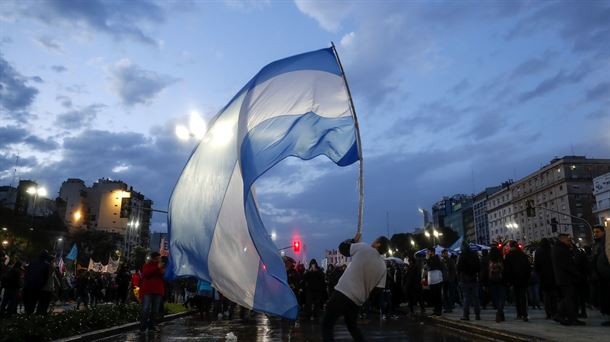

Mapa
Argentina
La Argentina está organizada como un Estado federal descentralizado, integrado desde 1994 por un Estado nacional y 24 estados autogobernados,89 llamados también «jurisdicciones de primer orden»,10 que son 23 provincias y la Ciudad Autónoma de Buenos Aires (CABA), esta última designada como Capital Federal del país. Cada estado o jurisdicción de primer orden tiene autonomía política, Constitución, bandera y cuerpo de seguridad propios. Las 23 provincias mantienen todos los poderes no delegados al Estado nacional y garantizan la autonomía de sus municipios.
La economía argentina es la segunda más desarrollada e importante en Sudamérica. Según el Banco Mundial, su PIB nominal es el 21.º del mundo.15 Debido a su importancia geopolítica y económica, es uno de los tres estados soberanos latinoamericanos que forma parte del denominado Grupo de los 20 e integra además el grupo de los NIC o nuevos países industrializados.

Con una superficie de 2 780 400 km²,2 es el país hispanohablante más extenso del planeta, el segundo más grande de América Latina, y octavo en el mundo, si se considera solo la superficie continental sujeta a soberanía efectiva. Su plataforma continental, reconocida por la ONU en 2016, alcanza los 6 581 500 km²21 convirtiéndose en una de las más grandes del mundo,22 extendiéndose desde el continente americano hasta el Polo Sur en la Antártida, a través de Atlántico Sur. Si se cuentan las islas Malvinas, Georgias del Sur, Sandwich del Sur y otras numerosas islas menores (administradas por el Reino Unido pero de soberanía en litigio), más una porción del área antártica llamada Antártida Argentina al sur del paralelo 60° S, sobre la cual Argentina reclama soberanía, la superficie se eleva a 3 761 274 km².23 Es uno de los veinte países que tienen presencia permanente en la Antártida, siendo entre ellos el que tiene mayor cantidad de bases permanentes, con seis bases en total.